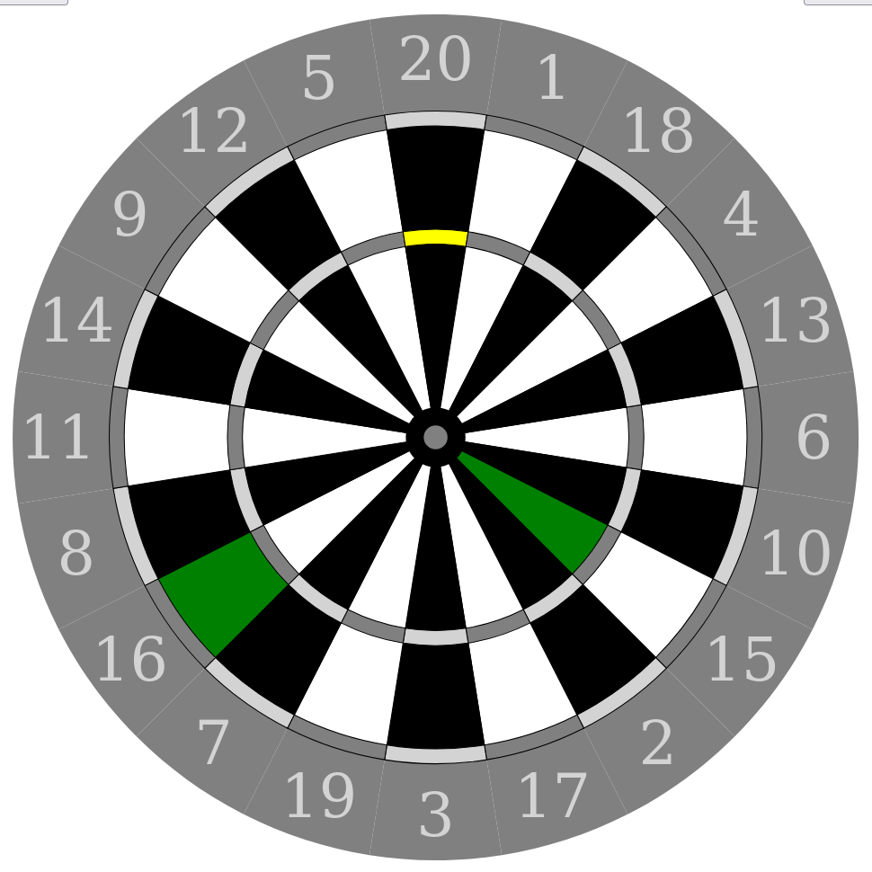

A web version of a puzzle from the game Blue Prince written in JavaScript. This was developed to expand my understanding of SVGs interaction with JavaScript and to try to reverse engineer how the different levels of the puzzle could have been coded in the game.

Discord bot
GitHubA Discord bot written in Python that sends a message when a new update is available for the Fairphone 4. This is accomplished by running a web crawler on a forum page about the phone every 24 hours. The project was developed to get insight and understanding of how Discord bots and web crawlers work.